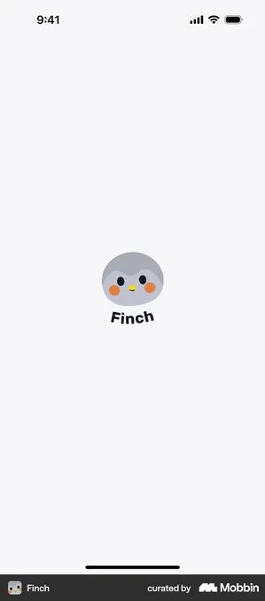
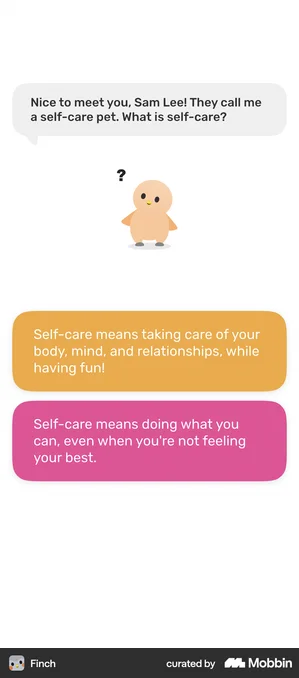

app-ux-teardown · board · life-rpg / self-care
Finch — UX/UI Teardown màn thật · Mobbin
Finch: Self-Care Widget Pet
Nuôi một chú chim con ("Lee") bằng cách tự chăm sóc bản thân. Cực đối lập với Habitica: KHÔNG phạt — thiết kế quanh sự cảm thông, giữ chân cả người dễ nản.
Nền tảng: iOS · Android
Giá: Free · Finch Plus ~$9.99/mo
Traction: 10M+ downloads est
Ra mắt: 2021
Bóc: 2026-09-05
Nguồn: Mobbin thật
Information Architecture
Home
Quests
Shop
Friends
Bag
Lee (pet)
Bottom-nav 6 tab
├─ Home · phòng của pet + thanh ⚡Adventure + "goals left today" (checklist)
├─ Quests · gói mục tiêu theo chủ đề (stress, routine, biết ơn…)
├─ Shop · tiêu Rainbow Stones mua đồ trang trí / trang phục pet
├─ Friends · kết bạn, gửi động viên (social nhẹ, không so kè)
├─ Bag · vật phẩm, rainbow stones, micropets sưu tầm
└─ Lee · hồ sơ pet: chỉ số (Logic…), nhật ký, sức khỏe cảm xúc
Đặt cái gì làm trung tâm: chú pet + việc chăm sóc bản thân. Việc của bạn không phải "task" khô khan mà là "cho Lee năng lượng đi phiêu lưu" — đóng khung lại toàn bộ động lực.
Màn hình thật — chụp từ Mobbin (iOS)

Splash
Nhận diện: chú chim tròn, warm pastel — báo hiệu "app dịu dàng" ngay từ đầu

Onboarding · dạy self-care
Hội thoại: pet HỎI "self-care là gì?" → cho chọn 2 câu trả lời ấm áp. Dạy khái niệm qua đối thoại, không phải form

Pet nhận chỉ số
"Lee gained +5.3 Logic" — việc bạn làm nuôi lớn pet: có gamification NHẸ, không phải zero

Home (core)
Thanh "1st Adventure 0/15" (⚡energy) + "7 goals left" checklist, mỗi goal =5⚡. Nav 6 tab dưới cùng

Swipe task → Skip/Snooze
★ Vuốt task = Skip / Snooze — KHÔNG "Fail". Đây là "phanh cảm thông" lõi
Bóc flow
Onboarding / activation thật
Hatch trứng ("You hatched a birb!") → bật thông báo (Lee nhắc uống nước) → dạy self-care qua hội thoại → "What areas would you like support with?" → "Sam Lee's starter plan" (7 goal dễ) → Home
Điểm khéo
Aha = "bạn vừa nở ra một sinh vật cần bạn". Emotional hook trước cả khi nói tính năng. Starter plan toàn goal 2 giây (Get out of bed) → thắng nhanh.
Điểm ma sát
Onboarding dài (21 màn) & nhiều chữ; người muốn vào nhanh có thể sốt ruột
Cơ chế ẩn
Hỏi "cần hỗ trợ mảng nào" (stress/routine/biết ơn…) → cá nhân hoá gói quest sau đó
Phán quyết
STEAL · emotional hook "sinh vật cần bạn" + starter plan thắng-nhanh
IMPROVE · rút gọn số màn, cho "skip to app"
Core loop — Energy → Adventure (thay cho penalty)
Mở app → thấy goals hôm nay → tick → +⚡ → đầy thanh Adventure → pet ĐI PHIÊU LƯU → mang về rainbow stones + món kỷ niệm → lặp lại hôm sau
Điểm khéo
Phần thưởng là tiến trình của PET, không phải điểm của bạn → giảm áp lực thành tích, tăng nuôi dưỡng
Điểm ma sát
Thiếu sức ép → người cần "gậy" (loss aversion) thấy nhẹ đô, dễ trôi
Cơ chế ẩn
"Adventuring · back in 7:59:48" — pet vắng mặt tạo lý do quay lại app (variable reward + curiosity gap)
Phán quyết
STEAL · thưởng-cho-pet thay điểm-cho-mình · adventure timer kéo quay lại
IMPROVE · cho bật "chế độ thử thách" tuỳ chọn để thêm sức ép
★ Compassion / No-penalty (đối trọng Habitica)
Bỏ task → vuốt = Skip hoặc Snooze (KHÔNG "Fail") ‖ vắng nhiều ngày → không mất gì, pet vẫn chờ ‖ có bài thở / "Pause"
Điểm khéo
Tách "không làm được" khỏi "thất bại" — bảo toàn lòng tự trọng, giữ người dễ nản (nhóm churn cao nhất)
Điểm ma sát
Không có hậu quả → với người cần kỷ luật, cảm giác "vô thưởng vô phạt"
Cơ chế ẩn
Định vị "sức khỏe tinh thần" chứ không "năng suất" → biện minh cho việc bỏ penalty
Phán quyết
STEAL · Skip/Snooze thay Fail — chính là "phanh cảm thông" của The System
SKIP · bỏ hoàn toàn hậu quả (The System vẫn cần một mức sức ép)
Monetization + Retention (mùa vụ)
Free rộng → Finch Plus (sub) mở nội dung · Seasonal ("September Season · Beaks and Brushes") thả micropet hiếm mỗi tháng → sưu tầm
Điểm khéo
Seasonal + micropet hiếm = lý do mở app hằng ngày cả tháng (FOMO nhẹ, dễ thương)
Điểm ma sát
Một số nội dung hay khoá sau Finch Plus; billing đôi khi bị chê
Cơ chế ẩn
Sưu tầm (collection) là động cơ retention dài hạn thay cho streak-sợ-mất
Phán quyết
STEAL · event mùa vụ + vật phẩm hiếm sưu tầm (retention không-sợ-hãi)
IMPROVE · gắn seasonal vào 4 domain đời thật của The System
Design system (hex ƯỚC TÍNH từ screenshot)
Màu
#7c74d6
#8fd0c4
#f4b64a
#6fbf73
#e86aa0
Typography
Rounded sans, đậm
Body ấm, dãn dòng thoáng
Bo góc LỚN · nhiều khoảng trắng
Đặc trưng: warm pastel + illustration mềm · bo góc rất lớn · mật độ THOÁNG · icon 3D dễ thương · nút to. Trái ngược Habitica (chật, pixel). Đây là "ngôn ngữ dịu dàng" — nếu The System muốn khắc nghiệt hơn thì học bố cục thoáng chứ không copy bảng màu ngọt này.
Cơ chế gamification
⚡ Energy → Adventure
Vào bằng: hoàn thành goal self-care (mỗi goal ~5⚡)
Công thức: đủ ⚡ (vd 15) → pet đi Adventure → về sau X giờ kèm thưởng
Neo tâm lý: nuôi dưỡng + variable reward + curiosity gap (pet vắng)
UI: thanh ⚡ trên Home, timer "back in H:MM"
💗 Pet growth / chỉ số
Vào bằng: tương tác + hoàn thành việc
Công thức: pet lên chỉ số (vd "+5.3 Logic"), lớn dần từ baby
Neo tâm lý: tiến trình gắn vào SINH VẬT, không vào điểm số bản thân
UI: toast "Lee gained +X …", màn hồ sơ Lee
🌈 Rainbow Stones · Shop
Vào bằng: adventure & hoàn thành việc
Công thức: stones → mua trang phục/đồ trang trí phòng pet
Neo tâm lý: tự-biểu-đạt + chăm sóc (cosmetic, không pay-to-win)
UI: tab Shop, giá bằng stones
🎟️ Seasonal · Micropet hiếm
Vào bằng: nạp đầy năng lượng mỗi ngày trong mùa
Công thức: giữ đều cả tháng → mở micropet hiếm (vd "Sketch")
Neo tâm lý: collection + FOMO nhẹ (không trừng phạt)
UI: banner mùa, đồng hồ đếm ngược ngày
Tổng hợp — lấy gì / bỏ gì cho "The System"
STEAL · Skip/Snooze thay Fail (phanh cảm thông) · thưởng-cho-pet + adventure timer · emotional hook onboarding · seasonal collection retention
IMPROVE · thêm mức sức ép TUỲ CHỌN · gắn pet-growth vào 4 domain đời thật · seasonal theo domain
SKIP · bỏ HOÀN TOÀN hậu quả · bảng màu quá ngọt (lệch tệp wibu thích HUD ngầu) · onboarding 21 màn
Bài học lớn nhất: Finch chứng minh "phanh cảm thông" giữ chân được 10M+ người — nhưng nó thiếu sức ép. The System đứng GIỮA: giữ Skip/Snooze của Finch + loss-aversion của Habitica, chỉnh thành "phạt CÓ phanh".